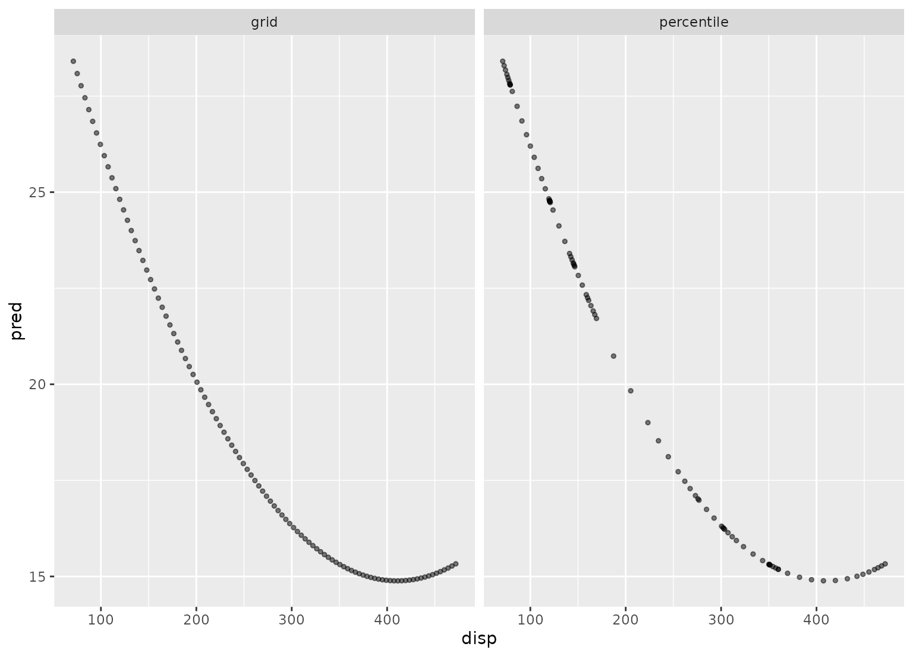

step_profile creates a specification of a recipe step that
will fix the levels of all variables but one and will create a
sequence of values for the remaining variable. This step can be
helpful when creating partial regression plots for additive
models.
step_profile( recipe, ..., profile = NULL, pct = 0.5, index = 1, grid = list(pctl = TRUE, len = 100), columns = NULL, role = NA, trained = FALSE, skip = FALSE, id = rand_id("profile") ) # S3 method for step_profile tidy(x, ...)
| recipe | A recipe object. The step will be added to the sequence of operations for this recipe. |
|---|---|
| ... | One or more selector functions to choose which
variables will be fixed to a single value. See |
| profile | A call to |
| pct | A value between 0 and 1 that is the percentile to
fix continuous variables. This is applied to all continuous
variables captured by the selectors. For date variables, either
the minimum, median, or maximum used based on their distance to
|
| index | The level that qualitative variables will be fixed. If the variables are character (not factors), this will be the index of the sorted unique values. This is applied to all qualitative variables captured by the selectors. |
| grid | A named list with elements |
| columns | A character string that contains the names of
columns that should be fixed and their values. These values are
not determined until |
| role | Not used by this step since no new variables are created. |
| trained | A logical to indicate if the quantities for preprocessing have been estimated. |
| skip | A logical. Should the step be skipped when the
recipe is baked by |
| id | A character string that is unique to this step to identify it. |
| x | A |
An updated version of recipe with the new step
added to the sequence of existing steps (if any). For the
tidy method, a tibble with columns terms (which
is the columns that will be affected), and type (fixed or
profiled).
This step is atypical in that, when baked, the
new_data argument is ignored; the resulting data set is
based on the fixed and profiled variable's information.
library(modeldata) data(okc) # Setup a grid across date but keep the other values fixed recipe(~ diet + height + date, data = okc) %>% step_profile(-date, profile = vars(date)) %>% prep(training = okc) %>% juice#> # A tibble: 100 x 3 #> diet height date #> <fct> <dbl> <date> #> 1 anything 68 2011-06-27 #> 2 anything 68 2011-06-30 #> 3 anything 68 2011-07-04 #> 4 anything 68 2011-07-08 #> 5 anything 68 2011-07-11 #> 6 anything 68 2011-07-15 #> 7 anything 68 2011-07-19 #> 8 anything 68 2011-07-23 #> 9 anything 68 2011-07-26 #> 10 anything 68 2011-07-30 #> # … with 90 more rows########## # An *additive* model; not for use when there are interactions or # other functional relationships between predictors lin_mod <- lm(mpg ~ poly(disp, 2) + cyl + hp, data = mtcars) # Show the difference in the two grid creation methods disp_pctl <- recipe(~ disp + cyl + hp, data = mtcars) %>% step_profile(-disp, profile = vars(disp)) %>% prep(training = mtcars) disp_grid <- recipe(~ disp + cyl + hp, data = mtcars) %>% step_profile( -disp, profile = vars(disp), grid = list(pctl = FALSE, len = 100) ) %>% prep(training = mtcars) grid_data <- bake(disp_grid, new_data = NULL) grid_data <- grid_data %>% mutate(pred = predict(lin_mod, grid_data), method = "grid") pctl_data <- bake(disp_pctl, new_data = NULL) pctl_data <- pctl_data %>% mutate(pred = predict(lin_mod, pctl_data), method = "percentile") plot_data <- bind_rows(grid_data, pctl_data) library(ggplot2) ggplot(plot_data, aes(x = disp, y = pred)) + geom_point(alpha = .5, cex = 1) + facet_wrap(~ method)